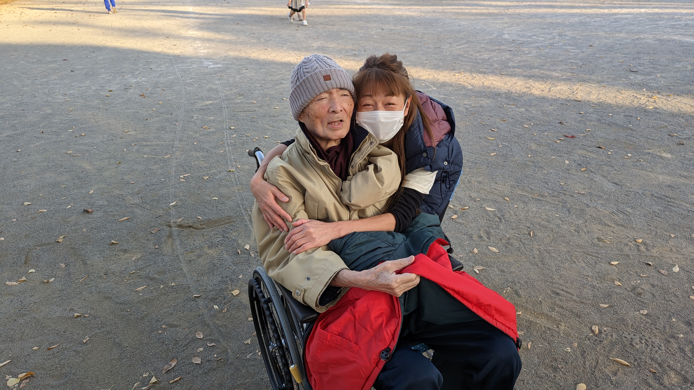
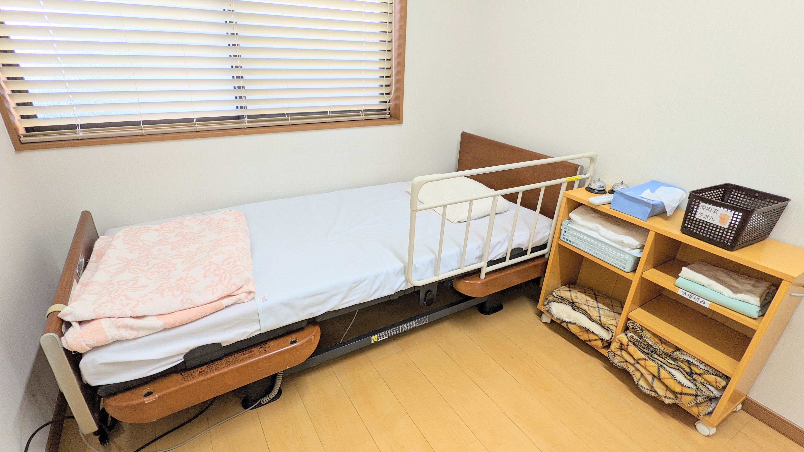

私たちがご提案したいのは、単なる「福祉用具」ではありません。住み慣れた地域で、あなたらしく過ごすための「これからの環境づくり」です。医療と介護のプロの視点で、暮らしを広げる一番の安心をお届けします。


手すりの位置を、数センチ変えるだけで。
自分に合った車いすに、座り直すだけで。
今まで諦めていたことができるようになる。
ご家族の肩の力が、ふっと抜ける。
身体の状態や、日々の暮らしの動線は人それぞれ違うから。
まずは、あなたの「ちょっとした困りごと」を私たちにお話しください。
医療と介護のプロの視点で、暮らしを広げる一番の安心をお届けします。
介護屋本舗が目指すのは「レンタル屋さん」ではなく「利用者さまと一緒に生活の場をつくること」です。ケアマネジャー、看護師、リハビリ職員など専門職とチームを組み、最適な生活環境をご提案します。
長年介護の現場で培ってきた豊富な経験と専門知識を活かし、医療と介護両方の視点から、今のあなたに本当に必要な環境をご提案します。

この地域で介護に携わって十数年。「早く解決してほしい」というお気持ちを深く理解しているからこそ、根付いた地域ネットワークで迅速に対応・解決します。
福祉用具は「届けて終わり」ではありません。定期的にご自宅にお伺いし、安全にお使いいただけているかをしっかり点検。心地よい暮らしを継続支援します。

ご相談からお試し、納品、アフターフォローまで専門相談員が一貫してサポートいたします。
担当ケアマネジャー様経由、またはご本人・ご家族様から直接お気軽にご相談ください。急な退院による緊急手配にも迅速に対応いたします。
福祉用具専門相談員がご自宅にお伺いし、お身体の状態、日々の生活動線、住環境の課題を詳しくヒアリングいたします。
カタログや実際のデモ機（ベッド・車いす・歩行器等）を用いて、身体に無理がないか、操作しやすいかを事前にお試しいただけます（お試し無料）。
専任スタッフがご自宅へお届けし、安全な位置に設置。使い方や注意点を丁寧にご説明し、安心してお使いいただける状態にします。
納品後も定期的にご自宅へ訪問し、ボルトの緩みや消耗チェック、身体状況の変化に合わせた高さ調整や用具変更を継続して行います。
固定用手すり、歩行器、単点杖・多点杖、スロープ等の一部福祉用具について、ご利用者様自身で「レンタル」または「購入」を選択できるようになりました。専門相談員がメリット・デメリットや医師・ケアマネジャーの意見を踏まえて最適な方法をご提案し、選択後もモニタリング・メンテナンスを責任持って行います。
全取り扱い品目や詳細な寸法・仕様が掲載された公式カタログ（PDF）をご覧いただけます。
介護保険の認定を受けている方は、原則1割（所得により2〜3割）の自己負担でご利用いただけます。
| 1. 車椅子 | 自走用・介助用標準型車椅子、普通型電動車椅子 |
|---|---|
| 2. 車椅子付属品 | クッション、電動補助装置、テーブル、スライディングボード |
| 3. 特殊寝台 | 介護用電動ベッド（背上げ・高さ調節機能付き） |
| 4. 特殊寝台付属品 | マットレス、サイドレール、ベッド用手すり、介助ベルト |
| 5. 床ずれ防止用具 | 送風装置・空気圧調整付きエアーマット、体圧分散マット |
| 6. 体位変換器 | エアーパッド等を身体の下に挿入し体位変換・保持するもの |
| 7. 手すり | 床やベッドサイドに置いて使用する工事を伴わない手すり |
| 8. スロープ | 段差解消のための取り付け工事を伴わないスロープ |
| 9. 歩行器 | 車輪付き歩行器、四脚歩行器、プラットホームクラッチ等 |
| 10. 歩行補助つえ | 松葉杖、カナディアンクラッチ、ロフストランドクラッチ、多点杖 |
| 11. 徘徊感知機器 | 認知症の方が屋外へ出ようとした時にセンサーで感知・通報 |
| 12. 移動用リフト | 床走行型・固定式リフト（つり具を除く本体） |
| 13. 自動排泄処理装置 | 尿や便を自動的に吸引・処理する装置（レシーバー部等を除く） |
| 1. 腰掛便座 | ポータブルトイレ、補高便座、立ち上がり補助便座 |
|---|---|
| 2. 入浴補助用具 | シャワーチェア、浴槽内椅子、浴槽手すり、浴室内すのこ |
| 3. リフトのつり具 | 移動用リフトに連結可能なつり具部分 |
| 4. 排泄処理装置部品 | レシーバー、チューブ、タンク等の交換可能部品 |
| 5. 簡易浴槽 | 空気式・折りたたみ式等で容易に移動できる浴槽 |
| 6. 排泄予測支援機器 | 膀胱内の尿の溜まり具合を可視化・排泄タイミング通知 |
| 手すり取り付け | 玄関、廊下、階段、トイレ、浴室への手すり設置 |
|---|---|
| 段差の解消 | 敷居段差解消、屋外スロープ工事 |
| 床材の変更 | 滑りにくい床材への張り替え、クッションフロア |
| 扉の取り替え | 開き戸から引き戸・折れ戸への改修工事 |
| 便器の取り替え | 和式便器から洋式便器への交換・かさ上げ |
福祉用具のご利用やお手続きに関してよくいただくご質問にお答えします。
はい、要介護認定の申請中（暫定利用）であってもご利用いただけます。退院日やご帰宅のスケジュールに合わせて最短でデモ機の手配や納品設置を行いますので、お急ぎの場合もまずはご相談ください。
デモ機のお試し・フィッティング、および住宅改修の現地調査・お見積もりはすべて無料です。実際にご自宅でお使いいただき、身体に合っているか納得された上でご契約いただけます。
はい、お気軽にご相談ください。2024年の法改正により一部品目で「選択制」が導入されました。今後の病状の変化や生活環境、費用面のメリット・デメリットを専門相談員が丁寧にご説明し、最適な選択をサポートします。
はい、工事前の事前申請書類の作成から、担当ケアマネジャー様との理由書連携、工事後の完了届・給付申請手続きまで、当社が責任を持って代行いたします。
ケアマネジャー様からの新規ご依頼、ご本人・ご家族からの用具のお試しや住宅改修のご相談など、専門相談員が迅速に伺います。